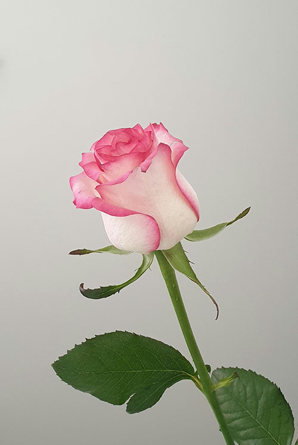

Roses are among the most beloved flowers in the world, admired for their beauty, fragrance, and symbolism. They come in many colors, each carrying its own meaning red roses often represent love and passion, while white roses symbolize purity and peace. Roses have been cultivated for thousands of years and are commonly used in gardens, bouquets, perfumes, and celebrations. Their soft petals and sweet scent make them a favorite choice for expressing emotions and adding elegance to any setting.
|
 |